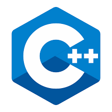

David Sellam
Le Wagon TLV
Sales Manager in a leading financial company, felt in love with coding ♥️
Ya Habibi Tel AvivProgramming Languages
CC (/siː/, as in the letter c) is a general-purpose, imperative computer programming language, supporting structured programming, lexical variable scope and recursion, while a static type system prevents many unintended operations. By design, C provides constructs that map efficiently to typical machine instructions, and therefore it has found lasting use in applications that had formerly been coded in assembly language, including operating systems, as well as various application software for computers ranging from supercomputers to embedded systems. |
|
|  |
C++C++ (/ˌsiːˌplʌsˈplʌs/ "see plus plus") is a general-purpose programming language. It has imperative, object-oriented and generic programming features, while also providing facilities for low-level memory manipulation. |
RubyRuby is a dynamic, interpreted, reflective, object-oriented, general-purpose programming language. It was designed and developed in the mid-1990s by Yukihiro "Matz" Matsumoto in Japan. |